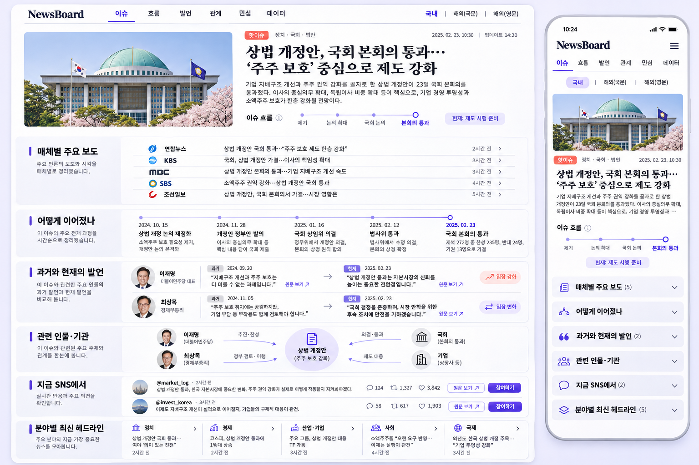
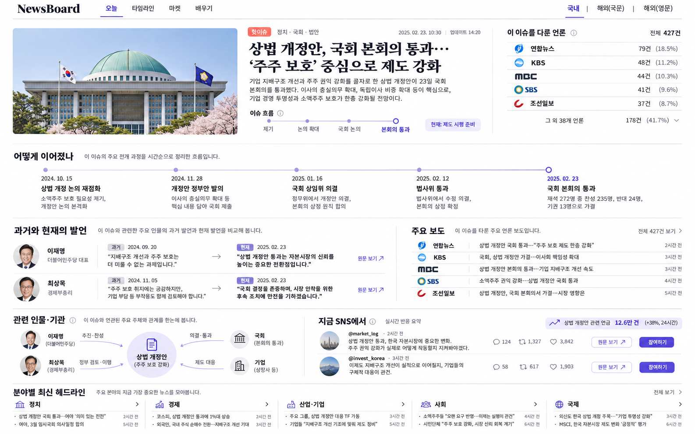
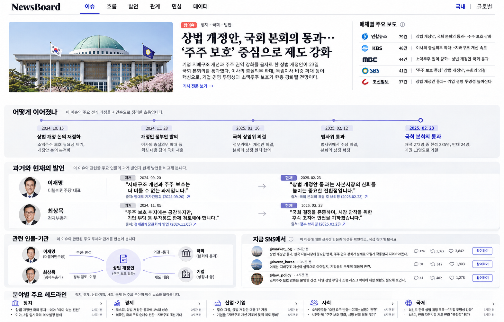
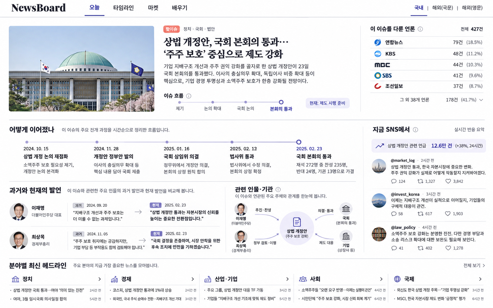
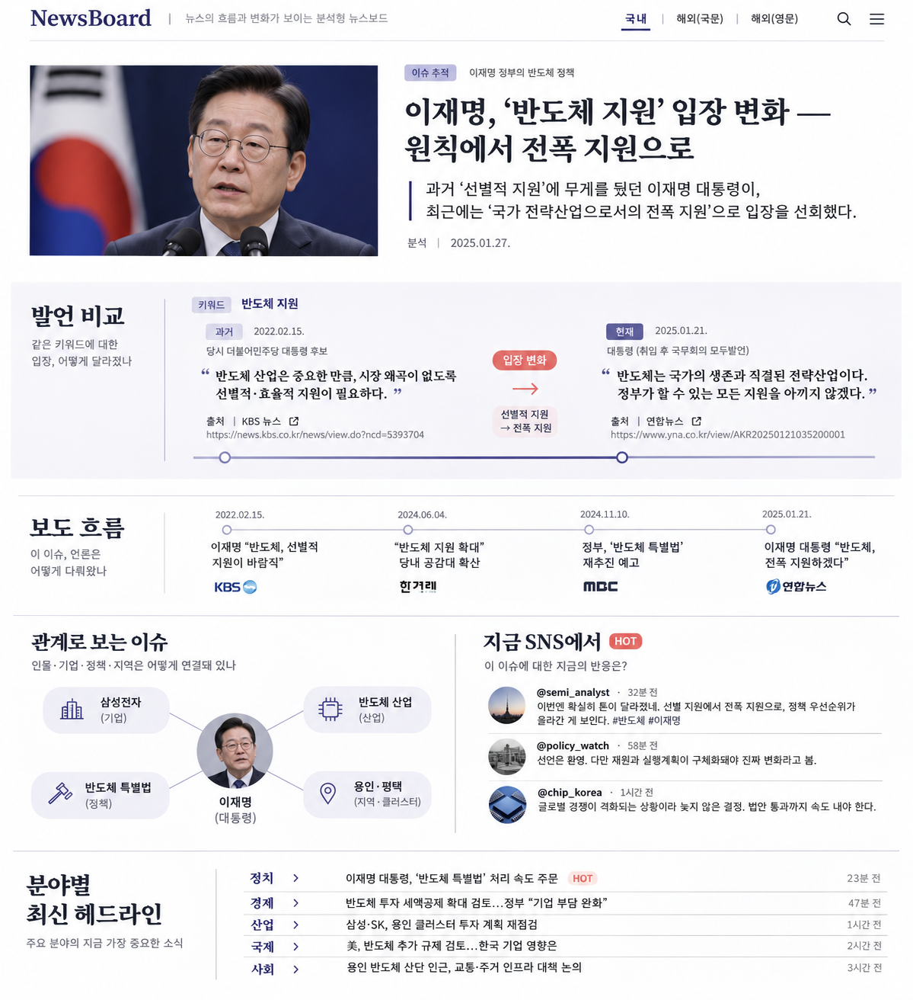
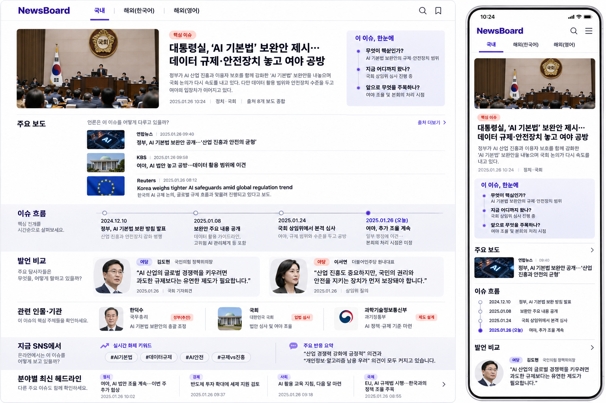

핫이슈
정치 · 국회 · 법안
상법 개정안, 국회 본회의 통과… ‘주주 보호’ 중심으로 제도 강화
기업 지배구조 개선과 주주 권익 강화를 골자로 한 상법 개정안이 본회의를 통과했습니다. 이사의 충실의무 확대와 독립이사 비중 확대가 핵심입니다.
ISSUE FLOW
제기논의 시작
논의 확대정부안 발의
국회 논의상임위 의결
본회의 통과현재
상법 개정 논의 재점화
소액주주 보호 필요성 제기
개정안 정부안 발의
핵심 내용 국회 제출
국회 상임위 의결
본회의 상정 원칙 합의
법사위 통과
수정안 본회의 회부
국회 본회의 통과
재석 272명 중 235명 찬성
연
상법 개정안 국회 본회의 통과… 주주 보호 제도 강화연합뉴스 · 2시간 전
→K
국회, 상법 개정안 가결… 이사회 책임성 확대KBS · 3시간 전
→M
소액주주 권익 강화… 상법 개정안 본회의 통과MBC · 3시간 전
→S
주주 보호 중심 상법 개정, 시장 영향은SBS · 4시간 전
→조
상법 개정안 통과… 기업 경영 투명성 높아진다조선일보 · 5시간 전
→+
매체별 해설과 반응을 한눈에 비교유사 기사 38건은 묶어서 보기
→QUOTE COMPARISON
과거와 현재의 발언
같은 주제에 대한 입장 변화를 원문과 함께 비교합니다.
이재명더불어민주당 대표
과거 · 2024.09.20
“지배구조 개선과 주주 보호는 더 미룰 수 없는 과제입니다.”
출처: 당대표 기자간담회 · 원문 보기 ↗→
현재 · 2025.02.23
“상법 개정안 통과는 자본시장의 신뢰를 높이는 중요한 전환점입니다.”
출처: 국회 본회의 브리핑 · 원문 보기 ↗최상목경제부총리
과거 · 2024.11.05
“주주 보호 취지에는 공감하지만 기업 부담도 함께 검토해야 합니다.”
출처: 경제관계장관회의 · 원문 보기 ↗→
현재 · 2025.02.23
“국회 결정을 존중하며 시장 안착을 위한 후속 조치에 만전을 기하겠습니다.”
출처: 정부 브리핑 · 원문 보기 ↗RELATION MAP
관련 인물·기관
이재명 · 정책 추진
최상목 · 정부 검토
상법 개정안
(주주 보호 강화)
(주주 보호 강화)
국회 · 본회의 통과
기업 · 제도 대응
LIVE REACTION
지금 SNS에서
LATEST BY SECTOR
분야별 주요 헤드라인
대표 이슈와 독립적으로 오늘의 분야별 흐름을 확인합니다.
정치
- 여야, 상법 개정안 후속 협상
- 국회 주요 일정과 표결
경제
- 코스피·기업 주가 반응
- 외국인 수급 변화
산업·기업
- 기업 대응 TF 가동
- 지배구조 개선 움직임
사회
- 소액주주단체 반응
- 시민사회 논평
국제
- 글로벌 자본시장 비교
- 해외 제도 변화
DESIGN HISTORY
앞선 시안 비교
각 시안을 눌러 전체 화면을 비교해보세요.





